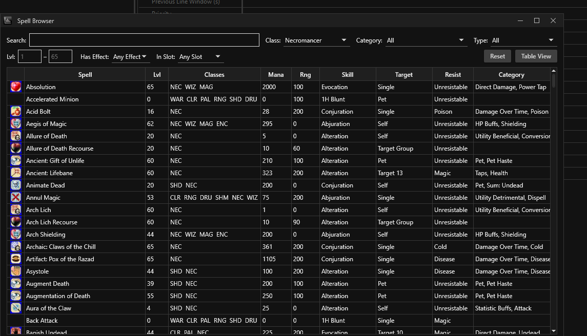

Browsing the Dalaya spell database and analyzing spell effects.
EQLogParser-Dalaya ships with a spell database built from Dalaya's actual game data. This database powers the spell name lookups in DPS breakdowns, HoT/DoT tick computations, and a dedicated Spell Browser window for exploring spells directly.
Open the Spell Browser from the Tools menu. It lists every spell in the Dalaya database with its icon, name, and a brief summary.
Type in the search box to filter spells by name. You can also filter by:
Combine filters to narrow a large list quickly.

Each spell displays its gem icon from Dalaya's spell graphics — the same icon you see
in the spell gem bar in-game. Icons are loaded from the data/icons/ folder
in the application directory.
Click any spell in the Spell Browser to see its description at the bottom of the window; double-click it to open the full Spell Details popup. The same popup is available from the Damage, Healing, and Tanking breakdowns and the Spell Counts view — right-click a spell there and choose Spell Details. It shows:
Slot 1: Increase Hit Points by 800 (L1) to 1150 (L60)
Slot 2: Increase Armor Class by 25 (L1) to 40 (L60)
The level scaling shown — (L1) to (L60) — reflects the spell's computed
values at the minimum and maximum caster level, using Dalaya's spell formula engine.
The Spell Details popup can also be opened from the trigger Spell Picker — a useful way to verify you've selected the right spell before inserting it into a pattern.
HoT (Heal over Time) spells appear in the Healing Summary alongside direct heals. The parser computes per-tick heal values for each HoT based on the caster's level and the spell data, giving you accurate heal totals rather than estimates.
Right-click a player's row in the Healing Summary and choose HoT Effectiveness to open a per-spell breakdown, across all of that player's HoTs, showing:
This is useful for identifying HoTs that were consistently landing short — indicating resist patterns, early mob deaths, or situations where re-casting sooner would have been more efficient.
The spell database is rebuilt from Dalaya's game files whenever the server patches and spell data changes. If you notice spells with wrong names, missing effects, or incorrect icons after a Dalaya patch, a rebuild is likely needed.
Rebuilding is a developer-side step documented in the repository under
tools/spells/README.md. Updated spell data is distributed with each
new release of EQLogParser-Dalaya — keep the application up to date to get the
latest spell database.